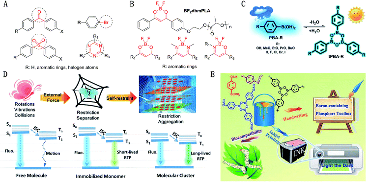
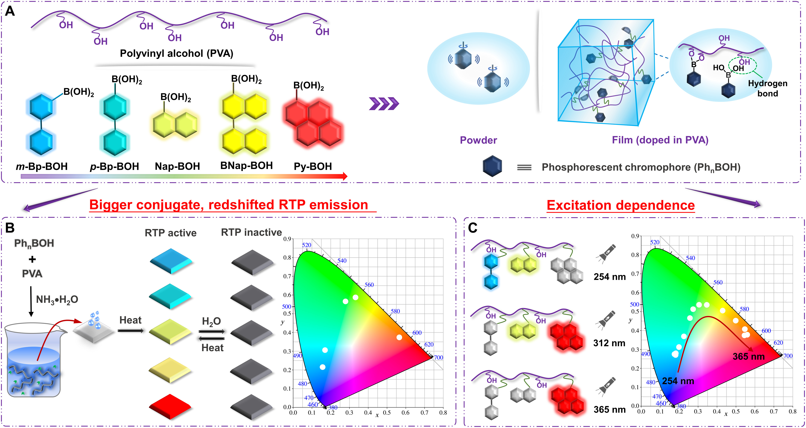
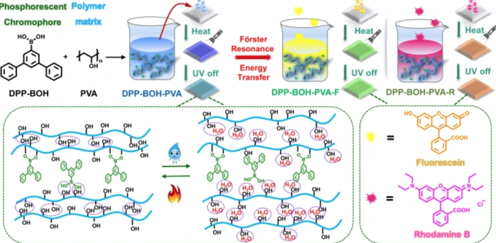
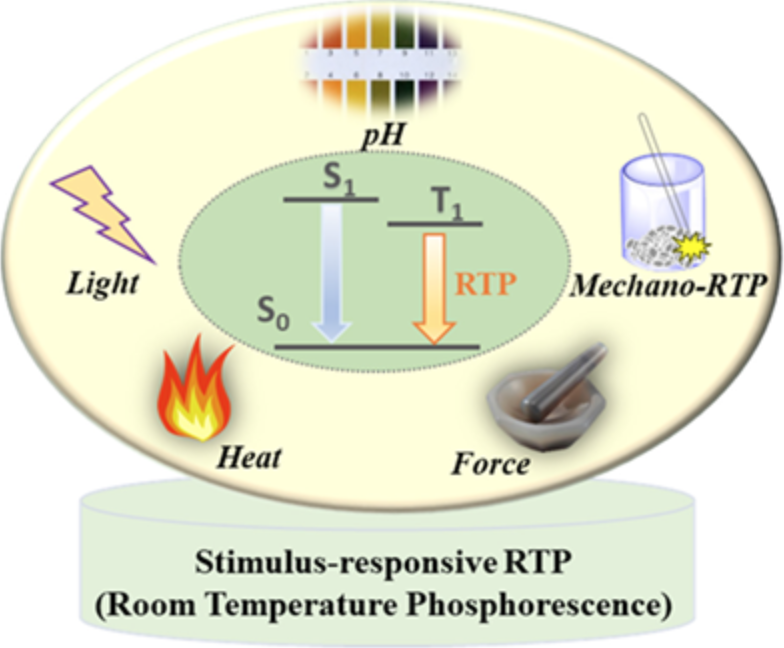

Literature - RTP
(summarized by
Mike Wang
)
Organic
|
Stimulus-responsive
|
|
|
Organic
2017
Abnormal room temperature phosphorescence of purely organic boron-containing compounds: the relationship between the emissive behaviorand the molecular packing, and the potential related applications
(open access)

Stimulus-responsive
2022
Stimulus-responsive room temperature phosphorescence materials with full-color tunability from pure organic amorphous polymers
(open access)

Completely aqueous processable stimulus responsive organic room temperature phosphorescence materials with tunable afterglow color
(open access)

2020
Stimulus-responsive room temperature phosphorescence in purely organic luminogens
(open access)
